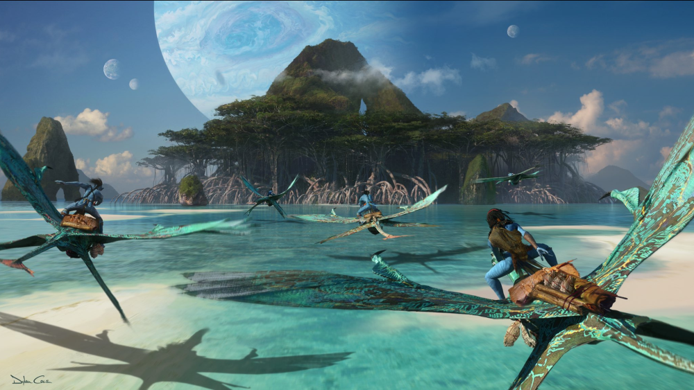
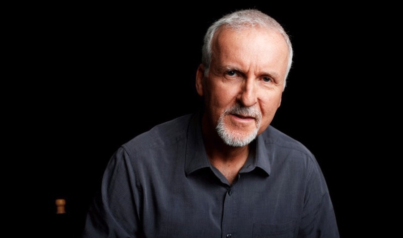

Avatar: Everything we know about the sequels
Over the last 10 years we've seen countless major movie franchises come and go, but few have had the global appeal of James Cameron's Avatar. Released in December 2009, the film continues to hold the record as the highest-grossing movie of all time, pulling in $2.782 billion worldwide and while that record may be about to fall, the strength of Avatar should not be overlooked. We have been patiently waiting for sequels to arrive ever since, and while the filmmaking team behind the franchise has been taking its time, they have some absolutely gigantic plans for the future.
Avatar 2 and its several other sequels have been in development for years and while it has looked a time or two like the movies might never actually happen, the second and third Avatar sequels are actually in production now, so baring massive disaster, they at least will happen. Here's everything we know about Avatar 2 so far.
Avatar 2

Avatar 2 was originally set for release back in 2015, but one delay after another set in, which pushed the date back again and again. The movie was always slated for a Christmas release, but what year that would happen was never very clear. Finally, release dates for not just Avatar 2, but all the sequels were set, with the first movie coming in 2020 and it seemed like that date might stick. However, one additional delay was announced when Disney set its first release calendar following the Fox merger. Avatar 2 is now set to open December 17, 2021.
What Is The Avatar 2 Rating?
Films with major blockbuster potential like Avatar 2 usually want to get as many butts into those theater seats as possible. So, while there's been no word on the actual story of the sequel, it's unlikely that it will drift into Rated R territory. We should also note that the original film received a PG-13 rating, and it's a good bet that Avatar 2, and the three sequels planned after it, will attempt to stick with the same rating.
The Director

The first Avatar was truly a passion project for James Cameron, as the filmmaker spent years and years developing both the script and the technological advancements that needed to be made. So, you didn't really expect him to hand off the sequels to someone else, did you? Cameron will be coming back for not just Avatar 2, but for 3, 4 and 5 as well.
He has some big plans for the technological side of things, and has talked about both filming at higher frame rates using performance capture underwater. You can be sure that Avatar 2 will push the boundaries of what can be accomplished in modern filmmaking. Cameron wants to show that the first film's success was not a fluke. The director is certainly not expecting success to come automatically to the Avatar sequels simply because the first one did well.